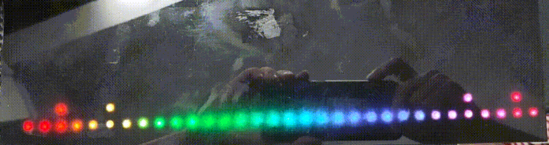
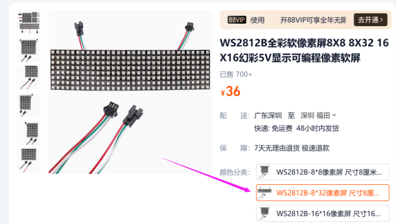
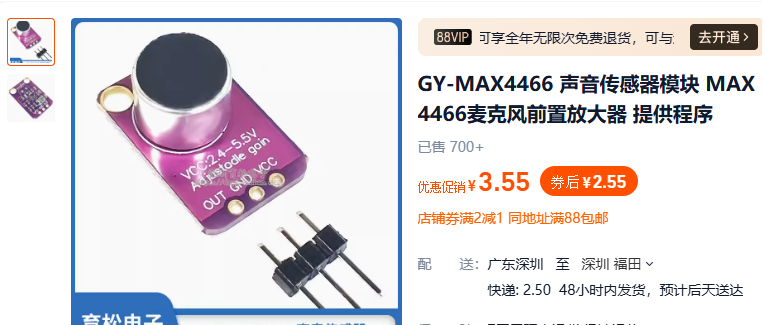
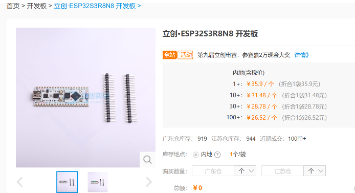
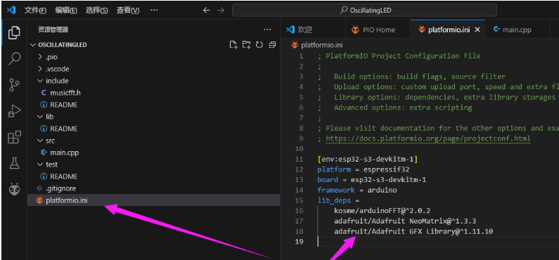
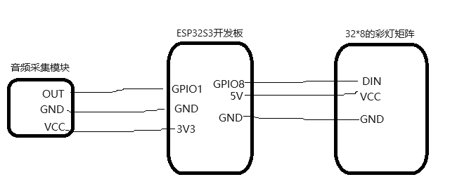

FFT音律灯
Update history
| Date | Version | Author | Update content |
|---|---|---|---|
| 2024-12-05 | 1.0.1 | 老怪鸽 | 更新了基本文档 |
本文继承自之前的👉彩灯驱动章节
本文完成的效果：

硬件准备
WS2812矩阵彩灯

购买地址：WS2812B全彩软像素屏8X8 8X32 16X16幻彩5V显示可编程像素软屏
麦克风模块

购买地址：GY-MAX4466 声音传感器模块 MAX4466麦克风前置放大器 提供程序
ESP32S3开发板

购买地址：立创·ESP32S3R8N8 开发板
工程创建
在VSCode中打开PlatformIO扩展创建名为OscillatingLED的 Espressif ESP32-S3-DevKitM-1 工程。
关于详细图文创建工程的过程请参考👉RTC时钟驱动章节的工程创建小节。
安装驱动库
创建完成之后，打开驱动库下载界面。实现功能的最底层的驱动，需要分别安装三个库：
搜索
Adafruit NeoMatrix，安装来自Adafruit的Adafruit NeoMatrix库。搜索
Adafruit GFX Library，安装来自Adafruit的Adafruit GFX Library库。搜索
arduinoFFT，安装来自Enrique Condes的arduinoFFT库。
将它们都安装到我们的工程当中。
关于详细图文安装驱动库的过程请参考👉RTC时钟驱动章节的安装驱动库小节。
都安装完成之后，打开platformio.ini文件，应该可以看到已经安装上了三个驱动库。

编辑代码
在工程下的include文件夹下新建一个 musicfft.h文件。
接下来往 musicfft.h 文件写入代码：
#include <Adafruit_NeoMatrix.h>
#include <arduinoFFT.h>
#define CHANNEL 1 //音频输入引脚
#define xres 32
#define yres 8
const uint16_t samples = 64; //采样点数，必须为2的整数次幂
const double samplingFrequency = 4000; //Hz, 声音采样频率
unsigned int sampling_period_us;
unsigned long microseconds;
unsigned long lastTime = 0;
unsigned long fallingTime = 0;
double vReal[samples]; //FFT采样输入样本数组
double vImag[samples]; //FFT运算输出数组
int freq_gain2[xres] = {30, 30, 30, 30, 30, 30, 30, 30, 30, 30, 30, 30, 30, 30, 30, 30, 30, 30, 30, 30, 30, 30, 30, 30, 30, 30, 30, 30, 30, 30, 30, 30};
int Intensity[xres] = {}; // initialize Frequency Intensity to zero
int FallingPoint[xres] = {0,0,0,0,0,0,0,0,0,0,0,0,0,0,0,0,0,0,0,0};
int Displacement = 1; // Create LED Object
//ArduinoFFT FFT = ArduinoFFT(); //创建FFT对象
ArduinoFFT<double> FFT = ArduinoFFT<double>(vReal, vImag, samples, samplingFrequency);
void getSamples(){
microseconds = micros();
for(int i = 0; i < samples; i++){
vReal[i] = analogRead(CHANNEL);
vImag[i] = 0;
microseconds += sampling_period_us;
}
bool reduce = false;
if ((millis() - lastTime) > 16) {
lastTime = millis();
reduce = true;
}
//FFT
FFT.windowing(vReal, 1, FFT_WIN_TYP_HAMMING, FFT_FORWARD);
FFT.compute(vReal, vImag, samples, FFT_FORWARD);
FFT.complexToMagnitude(vReal, vImag, samples);
//Update Intensity Array
int t = 16;
for(int i = t; i < (xres*Displacement)+t; i+=Displacement){
vReal[i] = constrain(vReal[i], 0 ,3596); // set max value for input data
vReal[i] = map(vReal[i], freq_gain2[(i-t)/Displacement], 1548, 0, yres); // map data to fit our display
if(reduce){
Intensity[(i-t)/Displacement] --; // Decrease displayed value
}
if (vReal[i] > Intensity[(i-t)/Displacement]) // Match displayed value to measured value
Intensity[(i-t)/Displacement] = vReal[i];
}
}
void drawYLine(Adafruit_NeoMatrix *matrix, int16_t x, int16_t y, int16_t h, int16_t c){
for(int i=y;i<y+h;i++){
matrix->drawPixel(x,7 - i,c);
}
}
uint16_t hsv2rgb2(Adafruit_NeoMatrix *matrix, uint16_t hue, uint8_t saturation, uint8_t value)
{
uint8_t red = 0;
uint8_t green = 0;
uint8_t blue = 0;
uint16_t hi = (hue / 60) % 6;
uint16_t F = 100 * hue / 60 - 100 * hi;
uint16_t P = value * (100 - saturation) / 100;
uint16_t Q = value * (10000 - F * saturation) / 10000;
uint16_t T = value * (10000 - saturation * (100 - F)) / 10000;
switch (hi)
{
case 0:
red = value;
green = T;
blue = P;
break;
case 1:
red = Q;
green = value;
blue = P;
break;
case 2:
red = P;
green = value;
blue = T;
break;
case 3:
red = P;
green = Q;
blue = value;
break;
case 4:
red = T;
green = P;
blue = value;
break;
case 5:
red = value;
green = P;
blue = Q;
break;
default:
return matrix->Color(255, 0, 0);
}
red = red * 255 / 100;
green = green * 255 / 100;
blue = blue * 255 / 100;
return matrix->Color(red, green, blue);
}
void displayUpdate(Adafruit_NeoMatrix *matrix, int displayPattern){
int color = 0;
switch(displayPattern){
case 0:
for(int i = 0; i < xres; i++){
drawYLine(matrix,i,yres-Intensity[i],Intensity[i],hsv2rgb2(matrix, color, 80, 80 ));
drawYLine(matrix,i,0,yres-1-Intensity[i],hsv2rgb2(matrix, color, 80, 80 ));
color += 360/xres;
}
break;
case 1:
if ((millis() - fallingTime) > 130) {
for(int i = 0; i < xres; i++){
if(FallingPoint[i]>0){
FallingPoint[i]--;
}
}
fallingTime = millis();
}
for(int i = 0; i < xres; i++){
drawYLine(matrix,i,0,yres-1,matrix->Color(0,0,0));
if(FallingPoint[i]<Intensity[i]){
FallingPoint[i] = Intensity[i];
}
drawYLine(matrix,i,yres-Intensity[i]+1,Intensity[i]-1,hsv2rgb2(matrix, color, 80, 80 ));
if(FallingPoint[i]>0){
matrix->drawPixel(i,yres-FallingPoint[i],matrix->Color(255,255,255));
}
color += 360/xres;
}
break;
case 2:
for(int i = 0; i < xres; i++){
drawYLine(matrix,i,0,yres,matrix->Color(0,0,0));
drawYLine(matrix,i,0,Intensity[i]+1,hsv2rgb2(matrix, color, 80, 80 ));
color += 360/xres;
}
break;
}
}
接下来在 main.cpp中编写以下代码：
#include <Arduino.h>
#include <Adafruit_NeoMatrix.h> //点亮LED矩阵需要的库
#include "musicfft.h" //音乐频谱库
//像素阵列定义
#define kMatrixWidth 32 //宽度
#define kMatrixHeight 8 //高度
#define BRIGHTNESS 10 //默认亮度 0-255
#define BRIGHTNESS_INTERVAL 30 //亮度调节间隔
#define LED_PIN 8 //像素阵列引脚
Adafruit_NeoMatrix *matrix; //LED矩阵类指针
//像素矩阵初始化
void InitLED_Matrix(void)
{
//设置像素矩阵的方向以及排列方式
matrix = new Adafruit_NeoMatrix(32, 8, LED_PIN, NEO_MATRIX_TOP + NEO_MATRIX_LEFT+
NEO_MATRIX_COLUMNS + NEO_MATRIX_ZIGZAG,
NEO_GRB + NEO_KHZ800);
matrix->setTextWrap(false); //设置文字是否自动换行
matrix->clear(); //清除当前显示内容
matrix->setBrightness(BRIGHTNESS);//设置亮度
}
void showFFT(void)
{
//进行采样
getSamples();
//更新频谱柱
displayUpdate(matrix, 2);
}
void setup()
{
//初始化LED矩阵显示
InitLED_Matrix();
}
void loop()
{
matrix->clear();
showFFT();
matrix->show();
delay(50);
}
硬件连接

6. 代码验证
代码编写完成之后，将ESP32S3开发板接入电脑下载代码。然后观察彩灯矩阵的现象。
实物显示如下：
使用黑色亚克力面板+白纸格挡光线显示
叠层从上到下是这样的：黑色亚克力面板 -> 白纸 -> LED矩阵
说明：如果你根据代码操作运行不起来，可以下载👉例程看看